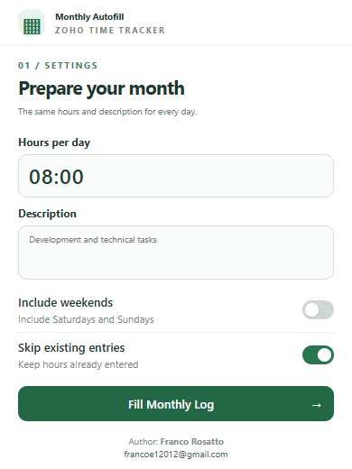

Choose what gets filled
Set daily hours and a shared description. Weekends are excluded and existing entries are preserved by default.
Set your daily hours and write your description once. Prepare the eligible days in your Zoho Monthly Log, then review and save on your terms.
For Chrome · Manual saving · Settings stored locally

Set daily hours and a shared description. Weekends are excluded and existing entries are preserved by default.
Check the month, selected row, eligible days and total hours before confirming your changes.
Check the processing summary and values in Zoho. You click the final Save/Submit button yourself.
You can install the current version manually from its source.
chrome://extensions in Chrome and enable Developer mode.src folder containing manifest.json.Supports the expected Monthly Log form in the main page. Review your first run before saving. Stopping a run does not undo values already entered.
Read the complete usage guide ↗